Economic calendar data in one stateless REST API.
ForexFactoryScrapper is a Flask service powered by forex-pytory. It validates parameters, paginates results, and exposes OpenAPI 3.0 endpoints across ForexFactory, CryptoCraft, EnergyExch, and MetalsMine.
docker run -d -p 5000:5000 forexfactory-scrapper
Supported Sources
Four financial portals, one schema
-
/api/forex/daily
ForexFactory
Central bank rate decisions, NFP, CPI prints, and macroeconomic releases with impact ratings.
-
/api/cryptocraft/daily
CryptoCraft
Digital asset catalysts, protocol upgrades, token unlocks, and regulatory calendar events.
-
/api/energyexch/daily
EnergyExch
Crude oil inventories, natural gas storage reports, OPEC+ meetings, and energy indicators.
-
/api/metalsmine/daily
MetalsMine
Precious and industrial metals schedules covering Gold, Silver, and Copper supply reports.
Interactive Workbench
API Request & Schema Simulator
Configure routes, dates, sources, and pagination to generate a ready-to-run cURL command and inspect the expected JSON payload structure. Responses below are schema-accurate mock examples.
System Decoupling
Stateless HTTP layer over forex-pytory
HTML extraction and DOM parsing stay isolated in forex-pytory. ForexFactoryScrapper handles request validation, offset/limit pagination, multi-source date bundling, CORS, and OpenAPI 3.0 schema generation.

Deployment
Run locally or in Docker
# 1. Build the image
docker build -t forexfactory-scrapper .
# 2. Run container on port 5000
docker run -d -p 5000:5000 --name forexfactory-scrapper forexfactory-scrapper
# 3. Verify health endpoint
curl -f http://localhost:5000/api/health# Prerequisites: Python 3.10, 3.11, or 3.12
python -m venv .venv
source .venv/bin/activate
pip install -r requirements.txt
python main.py-
Landing Page
http://localhost:5000/ -
Swagger UI Console
http://localhost:5000/swagger -
OpenAPI 3.0 Spec
http://localhost:5000/openapi.json
API Reference
Endpoints & Parameters
| Path | Method | Required | Optional | Description |
|---|---|---|---|---|
| / | GET | None | None | HTML landing page with quick navigation links. |
| /api/hello | GET | None | None | Basic sanity check endpoint. |
| /api/health | GET | None | None | Service health check returning operational status. |
| /api/forex/daily | GET | day, month, year |
limit, offset |
ForexFactory economic calendar events for a specific day. |
| /api/cryptocraft/daily | GET | day, month, year |
limit, offset |
CryptoCraft calendar events for a specific day. |
| /api/energyexch/daily | GET | day, month, year |
limit, offset |
EnergyExch calendar events for a specific day. |
| /api/metalsmine/daily | GET | day, month, year |
limit, offset |
MetalsMine calendar events for a specific day. |
| /api/bundle | GET | start_date, end_date |
sources, limit, offset |
Aggregated events across selected platforms for a date range. |
| /api/forex/sitemaps | GET | None | start_date, end_date, max_pages, limit, offset |
Paginated sitemap URLs retrieved from ForexFactory. |
| /swagger | GET | None | None | Swagger UI documentation console. |
| /openapi.json | GET | None | None | Raw OpenAPI 3.0 schema definition (src/openapi_spec.py). |
Operations & Tooling
Environment Variables & Makefile
| Variable | Type | Default | Description |
|---|---|---|---|
| HOST | String | 127.0.0.1 |
Network interface to bind (0.0.0.0 in Docker). |
| PORT | Integer | 5000 |
Port number for incoming HTTP connections. |
| DEBUG | Boolean | False |
Enable Flask debug reloader and tracebacks. |
| CORS_ORIGINS | CSV | * |
Allowed CORS origin URLs. |
| MAX_BUNDLE_DAYS | Integer | 31 |
Maximum allowed date span for /api/bundle. |
| MAX_SITEMAP_PAGES | Integer | 100 |
Maximum pages to crawl for /api/forex/sitemaps. |
| DOTENV_PATH | Path | None |
Explicit file path to load environment variables from. |
Architecture & Governance
Frequently Asked Questions
Why is the scraping engine separated into forex-pytory?
Separating the scraper into forex-pytory keeps HTTP presentation decoupled from HTML parsing. When target portals change their DOM, parser updates ship in forex-pytory without altering the API routing layer.
The service maintains no internal database or cache; requests trigger live upstream fetches, and upstream rate limits apply per calling IP.
How are invalid dates or pagination parameters handled?
Parameters are validated before invoking upstream scrapers. Malformed dates, non-integer date parts, or negative pagination values return HTTP 400 with a structured JSON payload: {"error": "..."}.